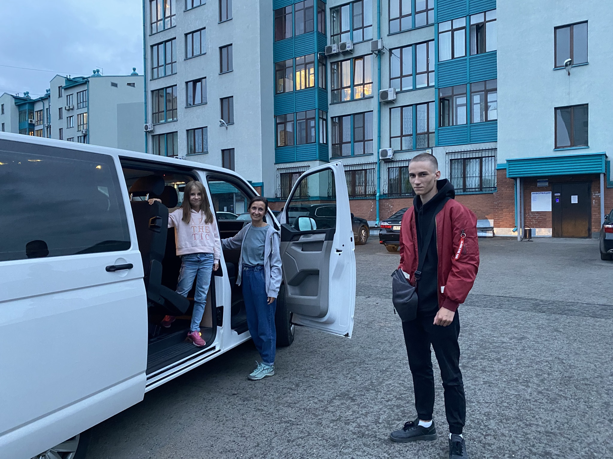

Итак, наш сын до 9 класса учился в 25 гимназии, где нам категорически не нравилось. Гимназии, вероятно, это не нравилось тоже.
Мы, полностью разочаровавшиеся в российском среднем образовании (в данном конкретном случае), принимаем решение после школы идти на Среднетехнический факультет КемГУ. По сути это техникум, но с претензией на «бесшовный» переход к высшему образованию. Направление выбираем что-то вроде «коммерция», то есть, «чтобы было». Обучение платное. Кажется, около 60 тысяч в год. Есть и бюджетные места, но на них претендуют только дети с ОЧЕНЬ хорошим аттестатом (средний балл около 4.8 ). Это, кстати, было моё первое удивление. Дети с хорошими оценками уходят из школы после 9 класса. Неспроста.
Техникум это как школа, но отношение педагогов уже как в вузе. То есть за успеваемость фактически никто не гонит. Впрочем, в школах уже тоже никто не гонит, в этом смысле. Учиться в техникуме нужно 3 года. То есть выходишь позже своих бывших одноклассников, но уже со специальностью и готовностью работать оставшуюся жизнь вентиляционщиком, пожарным или «коммерсантом».
Сыну в техникуме было скучно. Успеваемость резко прыгнула вверх, но радости не приносила. Никакой Дорожной карты не было и у нас. Рассматриваем варианты от уехать заграницу к Денису до армии. Всё это как-то пока слишком. Принимаем общее решение сдавать ЕГЭ, на всякий случай. В конце календарного года записываемся на сдачу ЕГЭ вместе ещё с 2-3 учениками техникума. Сын выбирает сдавать Иностранный, Информатику и Русский.
В январе понимаем, что у нас есть первая проблема. Сегодня для поступления в вуз нужны два условия: 1. Результаты ЕГЭ, 2. Аттестат о среднем образовании.
Но по технологии обучения в техникуме, аттестат нам дадут только через 3 года обучения. Садимся на стул, грустим. К ЕГЭ, разумеется, никто не думает готовиться.
В феврале обнаруживается вторая проблема: современное высшее образование строится вокруг двух китов. Профильной математики или Обществознания. Сын не выбрал ни того ни другого, и с его набором ЕГЭ, пусть даже там 300 баллов, никуда не поступить. Выбрать нужно было до 1 февраля. Грустим сильнее. К ЕГЭ, разумеется, никто не думает готовиться ещё больше.
Я читаю интернет и обнаруживаю выход: нужно писать письмо в Департамент Образования, посыпать голову пеплом и просить добавить дисциплину. Так и пишем, мы дураки, извините, в надежде на скорейшее положительное рассмотрение. Ведь без положительного решения к ЕГЭ, разумеется, никто не думает готовиться.
Наступает коронавирус.
Все образовательные процессы парализованы, речи о положительном рассмотрении нашей петиции нет. Все устанавливают ZOOM. Строим очередной дворец в Майнкрафте. К ЕГЭ… ну вы поняли.
О том, что ЕГЭ состоится, и нам разрешили сдавать Обществознание узнаём в начале июня. Одновременно узнаём, что тем, кто выбрал ЕГЭ по математике, аттестат о среднем образовании в техникуме всё-таки выдадут. Причём, саму математику из-за коронавирус проставят зачтут без экзамена, по аттестату. Удача. Мы думаем, что сын теперь всё же начал готовиться к ЕГЭ (нет).
В конце июня сын приходит к нам и говорит, что с Русским и Иностранным языками он не видит проблем, а вот Обществознание он знает примерно никак. НАВЕРНОЕ НУЖНО ИСКАТЬ РЕПЕТИТОРА. До экзамена остаётся 3 недели. Я пишу пост в фейсбук, тут же, с помощью Марина Тропина находится репетитор.
Параллельно я решаю найти в том же фейсбуке репетитора по Иностранному. Не для знаний, а чтобы подтянуть технологию сдачи. По Русскому не ищу, ведь все знают, что Русский язык и Станислав Оленев — одно и то же.
Репетиторы стоят около 1000 рублей в час, 2000 рублей за занятие. Удалось потратить тысяч 20. Больше не успели. Параллельно собираемся в Крым. Война войной, а обед по расписанию. Решаем выезжать на следующий после последнего экзамена день. А заявления в вузы, для экономии времени, подавать УЖЕ В ПУТИ.
Выезжаем, не понимая перспектив в целом и результатов ЕГЭ в частности.
В Крыму приходят закономерные справедливые невесёлые новости. ЕГЭ НЕ ОЧЕНЬ. Настроение падает. Сексуальные фантазии о бюджетном обучении разбились о скалы мыса Тархункут. Встаёт вопрос об обучении вообще. До окончания приёма заявления вузами остаётся неделя. Всего можно подать 5 заявлений в разные вузы. Два заявления подаём из нудистского пляжа в Коктебеле, два — из Севастополя. Одно так и не подаём. Некуда. Едем домой, обдумывая будущее, с укоризной глядя друг на друга. Сын планирует пойти работать.
По приезде, в процессе распития привезённых алкогольных напитков, получаем новость! Нас приглашают к обучению в одном из старейших вузов Санкт-Петербурга, Санкт-Петербургском государственном технологическом институте. Поднимаем бокал за удачу и перечисляем 50 тысяч рублей авансом для подтверждения серьёзности намерений. Поднимаем ещё один бокал.
Встаёт вопрос, кто полетит с сыном заселяться в общежитие и смотреть приличный ли вообще это город. Сын никогда не путешествовал один, лететь нужно с пересадкой, в городе нужно сначала доехать до вуза, потом до общежития. С вещами и документами. Желательно ничего не прохохотать.
Наташа переживает, хочет полететь, но работает. Я нигде не работаю, но лететь не хочу. Хоть и переживаю. К тому же, билеты на одного человека за два дня до вылета стоят примерно 30 тысяч.
За три дня до отъезда сын, который полгода отращивал и обесцвечивал волосы, уезжает в гости к друзьям и стрижёт себя машинкой. ОЧЕНЬ КОРОТКО.
Вчера увезли его в Новосибирск, посадили на самолёт. Сегодня в течение дня сын порешал все вопросики, уже погулял по городу и спит в общаге в Санкт-Петербурге, на улице Стойкости, дом 21. Горжусь.
Завтра пойдём забирать документы из техникума.